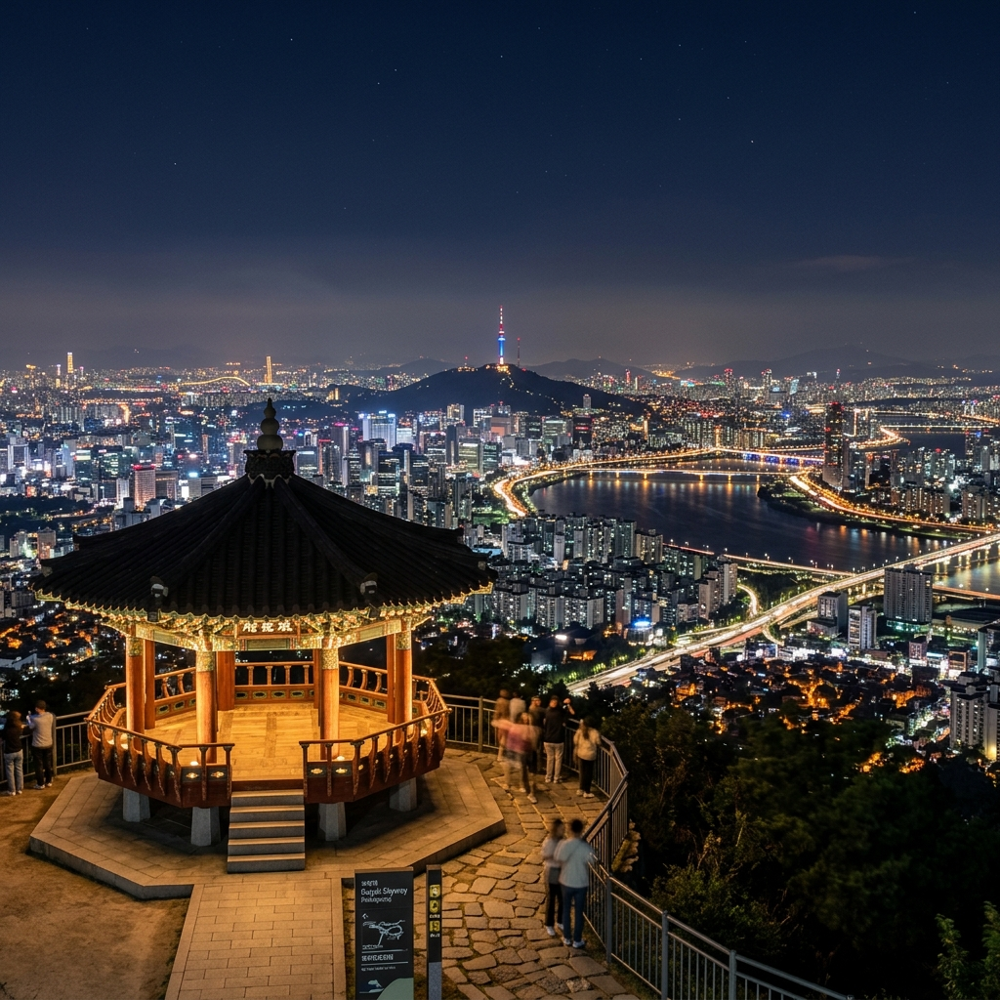
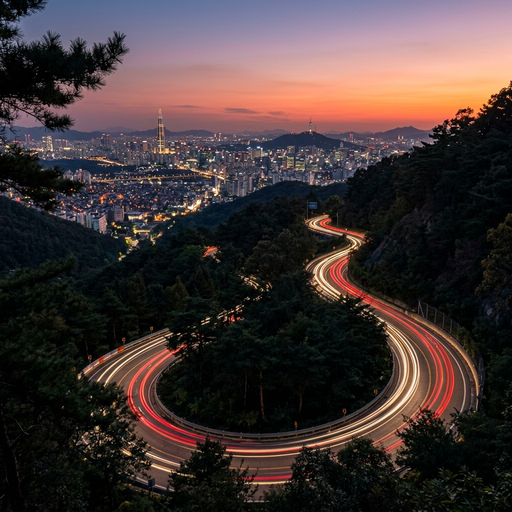
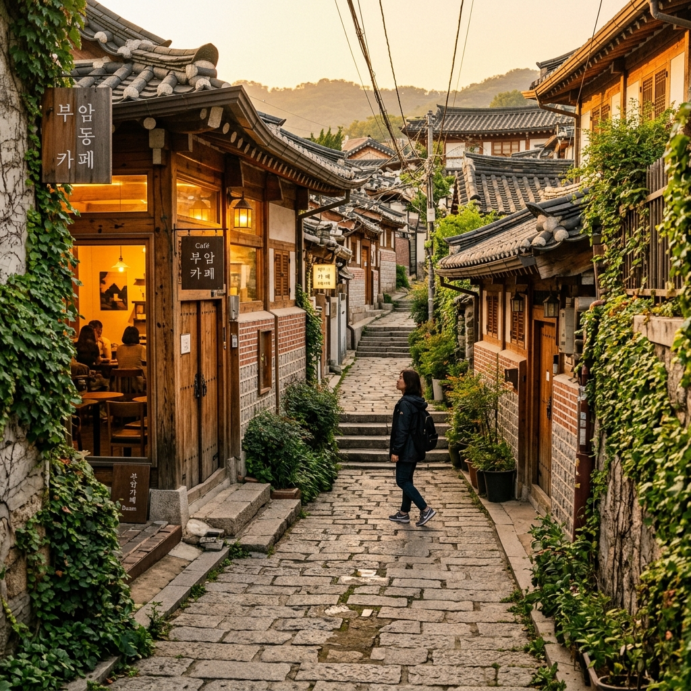

북악스카이웨이는 서울 종로구 북악산(해발 342m) 능선을 따라 개설된 산악 도로입니다.
1968년에 처음 개통되었고, 오랫동안 군사 시설 인접 지역으로 출입이 제한된 역사가 있습니다.
현재는 청와대 인근 구간이 완전히 개방되어 시민 누구나 자유롭게 드라이브하고 팔각정을 방문할 수 있습니다.
도로 총 연장은 약 8km이며, 평창동 방향과 성북동 방향 두 곳에서 진입할 수 있습니다.
도로 곳곳에 한양 도성 성곽길과 교차하는 구간이 있어, 드라이브 도중 잠깐 내려 성벽 길을 걷는 것도 가능합니다.
342m 고도는 남산(262m)보다 80m 가량 높습니다.
그 차이가 생각보다 큰 시야 차이를 만들어내는데, 서울 전체가 발아래 펼쳐지는 느낌이 더 강합니다.
남쪽으로는 광화문·종로·명동이 한눈에 들어오고, 멀리 남산서울타워의 빨간 불빛이 보입니다.
동쪽으로 시선을 돌리면 성북동 주택가 불빛과 그 너머 용마산 능선이 겹쳐집니다.
서쪽으로는 인왕산 실루엣과 은평·서대문 방향 야경이 펼쳐집니다.
맑은 날 밤에는 수평선처럼 서울의 끝이 보이지 않을 만큼 도시의 불빛이 끝없이 이어집니다.
이런 파노라마가 유료 전망대 입장 없이 가능하다는 점이 놀랍습니다.

북악스카이웨이에 오르는 방법은 크게 평창동 루트와 성북동 루트 두 가지입니다.
평창동 루트는 경복궁역 또는 광화문역에서 자하문로를 타고 북쪽으로 올라가다 부암동 방향으로 꺾어 진입합니다. 도로 폭이 상대적으로 넓고 이정표가 잘 되어 있어 초행자에게 권장합니다.
성북동 루트는 한성대입구역 방면에서 성북동 고개를 넘어 진입합니다. 주택가 골목을 통과하므로 소형 차량에게 적합합니다.
팔각정 정상부에는 소형 공영주차장이 있으며 무료로 이용할 수 있습니다.
주말 저녁 성수기에는 만차가 되는 경우도 있으므로, 평일 저녁 방문이 더 여유롭습니다.
차가 없어도 북악스카이웨이 팔각정에 오를 수 있습니다.
경복궁역 3번 출구에서 출발해 자하문로를 따라 북쪽으로 20분 정도 걸으면 창의문(자하문)에 도달합니다.
여기서 한양 성곽길을 따라 팔각정 방향으로 오르면 40~50분 만에 정상부에 닿을 수 있습니다.
이 루트는 성벽 탐방과 야경 감상을 동시에 즐길 수 있다는 점이 가장 큰 매력입니다.
체력 소모가 있으므로 올라갈 때는 택시, 내려올 때는 부암동 방향 도보 하산을 택하는 분들도 많습니다.
하산 후 부암동 골목 카페에서 차 한 잔으로 마무리하는 코스가 특히 인기입니다.
북악스카이웨이 야경의 황금 타이밍은 일몰 전 30분 도착입니다.
그러면 노을이 물드는 하늘과 그 아래 서울이 한 프레임에 담기는 '매직 아워' 사진을 찍을 수 있습니다.
일몰 후 20~30분이 블루 아워로, 이때는 하늘이 짙은 네이비 블루를 띠면서 도시 불빛이 가장 선명하게 살아납니다.
5월 기준으로 일몰은 오후 7시 30~40분 전후이므로 오후 7시 이전 도착이 이상적입니다.
겨울 맑은 날에는 대기가 투명해 선명도가 한 해 중 가장 높지만, 바람이 강하고 체감 온도가 낮아 방한 준비가 필수입니다.

부암동은 경복궁 서쪽에 자리한 조용한 언덕 마을로, 골목 분위기가 서울에서 유일무이합니다.
좁은 오르막 골목에 독립 카페, 갤러리, 도예 공방 등이 숨어 있어 발견하는 재미가 있습니다.
창의문(자하문) 주변의 청운문학도서관은 서울 도심을 내려다보는 뷰가 있어 도서관임에도 불구하고 야경 명소로 알려져 있습니다.
부암동 카페에서 커피 한 잔을 마시며 드라이브와 야경 감상을 돌아보는 것으로 밤 외출을 마무리하는 것이 이 코스의 가장 클래식한 결말입니다.
음식점도 여럿 있어 야경 전 부암동에서 저녁을 먹고 팔각정에 오르는 순서로 일정을 짜는 것도 좋습니다.
북악스카이웨이는 4계절 모두 다른 매력이 있습니다.
봄: 산벚꽃과 진달래가 능선을 물들이며, 일몰이 늦어 저녁 드라이브에 최적입니다.
여름: 짙은 초록빛 수목이 도로를 터널처럼 감싸고, 장마 직후 맑게 갠 날의 시야는 최고입니다.
가을: 단풍 시즌에는 능선 전체가 붉고 노랗게 물드는 단풍 드라이브 코스로도 손꼽힙니다.
겨울: 결빙 주의가 필요하지만, 눈 쌓인 산악 도로와 맑은 야경의 조합은 특별합니다.
도로가 좁고 커브가 많아 운전 시 속도를 줄이고 반대편 차량과의 교행에 주의해야 합니다.
야간에는 시야가 제한되므로 하향등만으로 운행하지 말고 상황에 맞게 등화를 조절해야 합니다.
겨울에는 결빙 구간이 생길 수 있어 스노우타이어 또는 체인 장착을 권고합니다.
음주 후 운전은 어디서나 절대 금지이지만, 특히 이런 산악 도로에서는 더욱 위험합니다.
팔각정 전망 데크 난간 밖으로 몸을 내미는 행동은 안전 사고의 위험이 있으므로 삼가야 합니다.

팔각정 방문 전 또는 후에 평창동 고급 주택가 일대를 드라이브하는 것도 색다른 경험입니다.
평창동은 조용하고 품격 있는 고급 주택가로, 갤러리나 레스토랑이 정원이 딸린 단독주택 형태로 자리하고 있습니다.
예약 필요한 프라이빗 레스토랑이 많으므로 방문 전 사전 예약이 필요합니다.
야경 드라이브 전 이곳에서 저녁 식사를 하고 팔각정에 올라 야경을 즐기는 코스는 특별한 날 방문하기에 좋습니다.
북악스카이웨이 팔각정 야경은 다음과 같은 분들께 특히 잘 맞는 코스입니다.
서울의 넓은 전경을 유료 전망대 없이 즐기고 싶은 분, 드라이브와 야경을 함께 즐기고 싶은 커플, 서울에 처음 온 외지 방문객에게 서울의 스케일을 보여주고 싶은 분들께 추천합니다.
계절에 관계없이 방문 가치가 있으며, 한 번 방문한 분들이 계절이 바뀌면 또 오게 되는 매력을 가진 곳입니다.
야경 후 부암동 카페에서의 마무리까지 포함하면 총 3~4시간짜리 완성도 높은 서울 야간 코스가 됩니다.